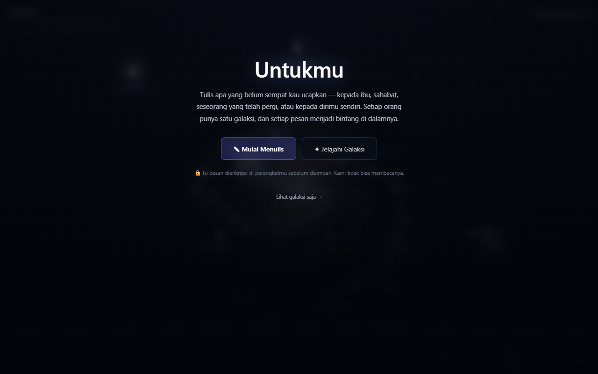
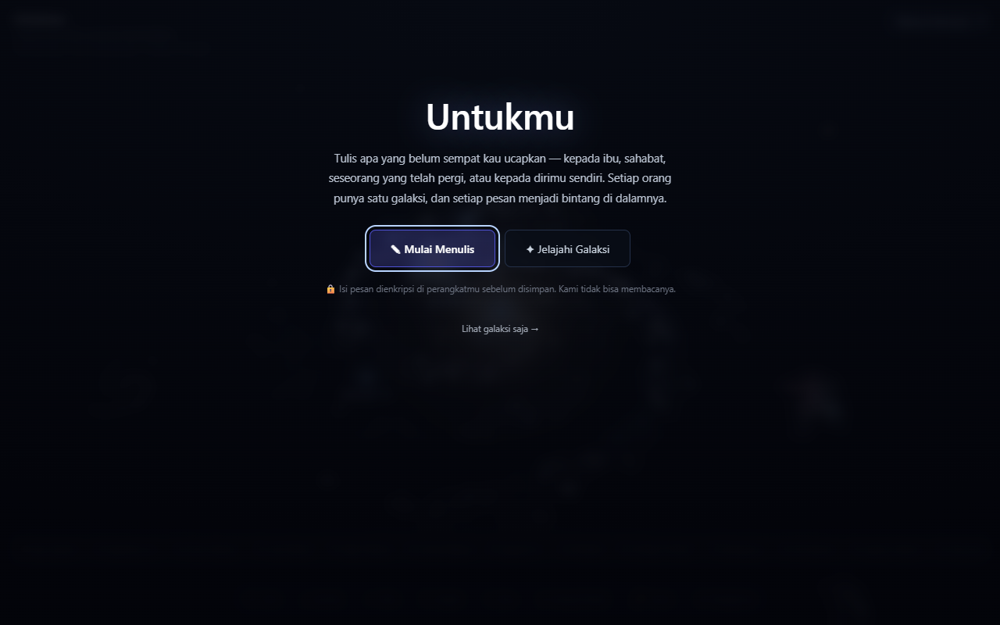
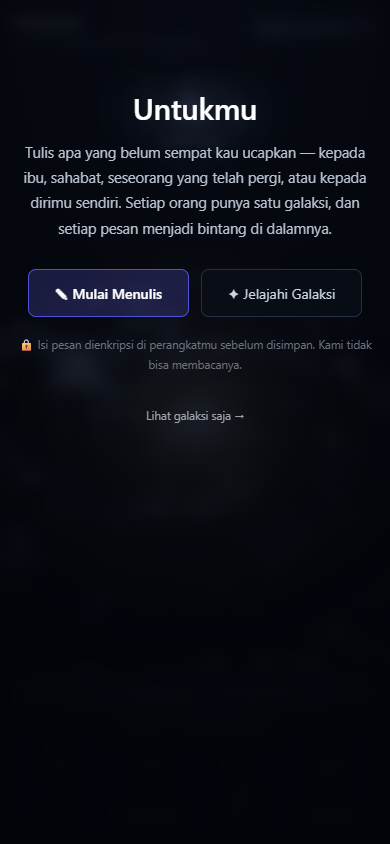
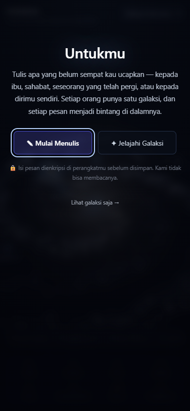

Pengukuran posisi, dimensi, font, warna, padding, dan radius empat elemen utama cocok pada kedua ukuran layar. Latar galaksi bersifat dinamis; sumber asli juga memuat data contoh, sedangkan hasil migrasi tidak. Ini bukan bukti kesamaan seluruh layar 100%.



